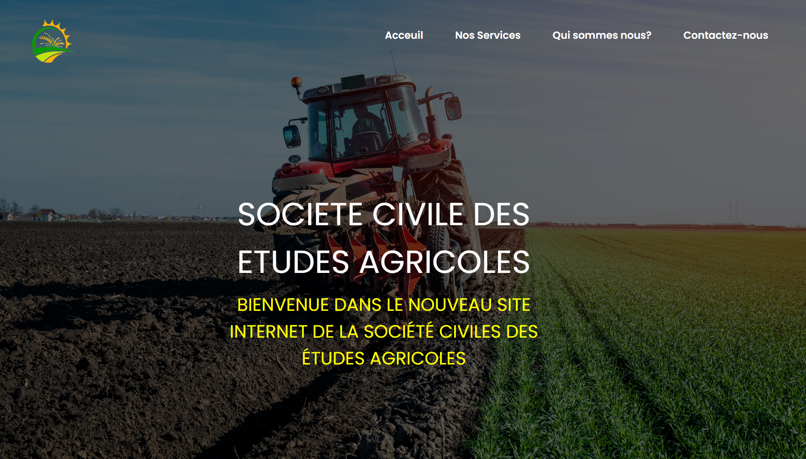
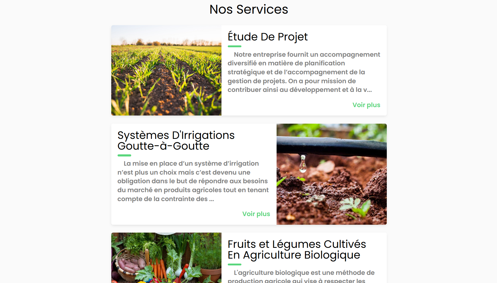
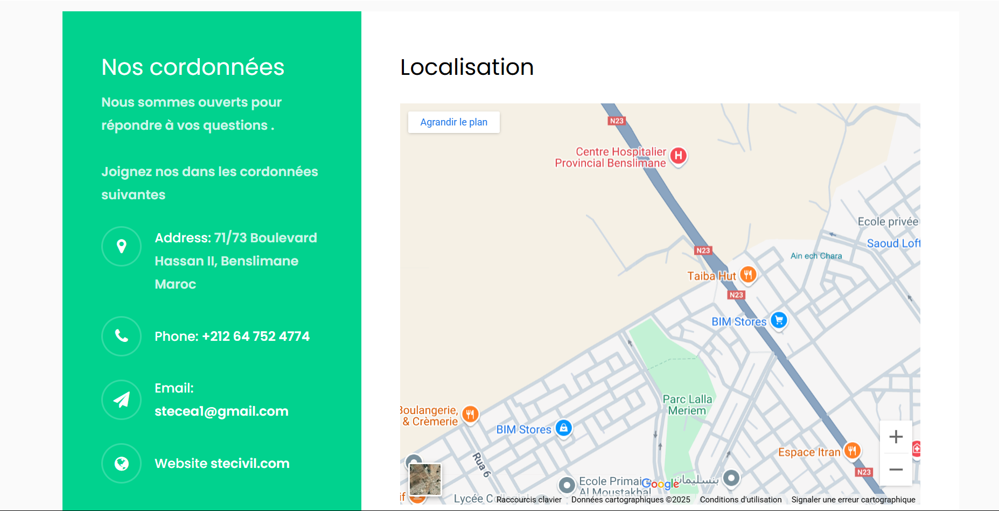
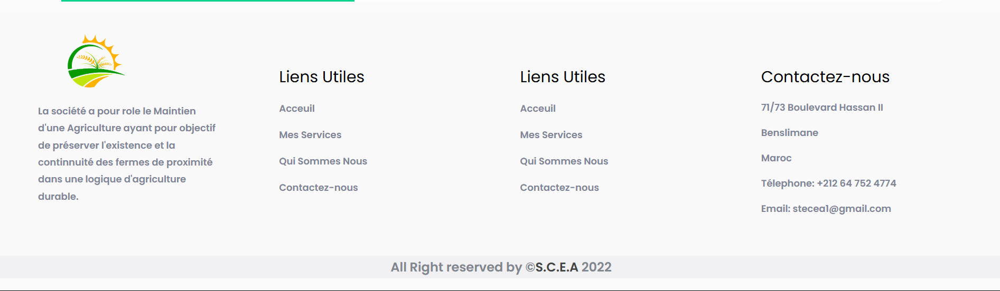

Développement d'un site web pour la société.
SOCIÉTÉ CIVILES DES ÉTUDES AGRICOLES
Aperçu du projet
Développement d'un site web vitrine pour la société pour representer ses services.
Technologies utilisées
HTML5
CSS3
JavaScript
Bootstrap
Responsabilités principales
- Mise en place d'un site web statique qui présente les services de la société
- Développement des pages web
- Tests et déploiement du site Web
Réalisations
Site Web Vitrine
Développement d'un site web statique
Interface Responsive
Design adaptatif avec Bootstrap
Services Agricoles
Présentation des études agricoles
Impact et résultats
100%
Site web déployé
5
Pages développées
15
Jours de développement
Album du projet

Page d'accueil du site web

Page des services agricoles

Page à propos de l'entreprise

Page de contact et informations
Faites défiler pour voir plus d'images →